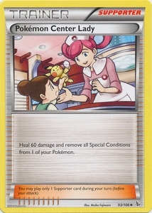

If you want to play the card game, you may want to focus on finding certain Pokémon or trainers and building a strong team to challenge other collectors. Pokémon cards can be usually be bought in boxed sets of themed decks, booster packs, and tins.
A theme deck will have 60 cards but will be more expensive overall. It's a great way to get your collection for playing started because it will give you a wide range of Pokémon, energy cards, trainer and item cards, as well as a decent mix of different card rarities. Booster packs will have about 10 cards in the newer expansions (and around 11 in older ones) and can cost as little as $3 or $4. Tins serve a similar purpose and are a great way to expand your collection.